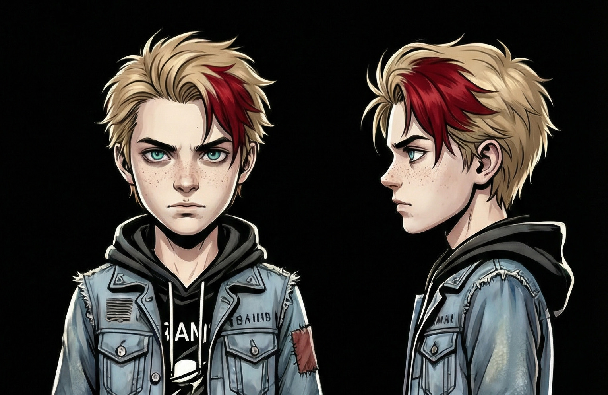
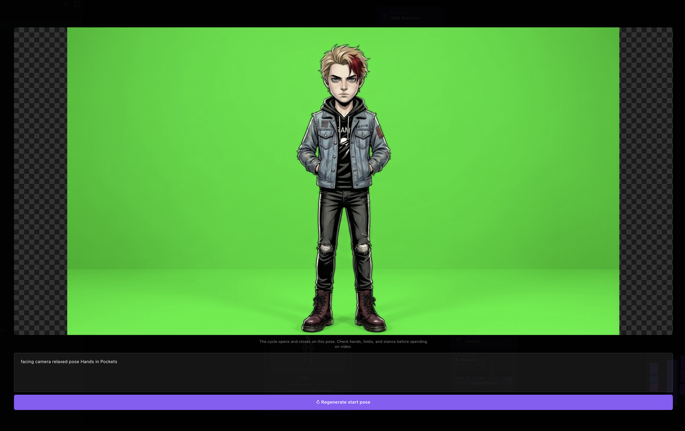
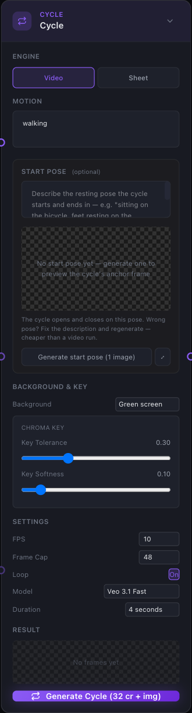
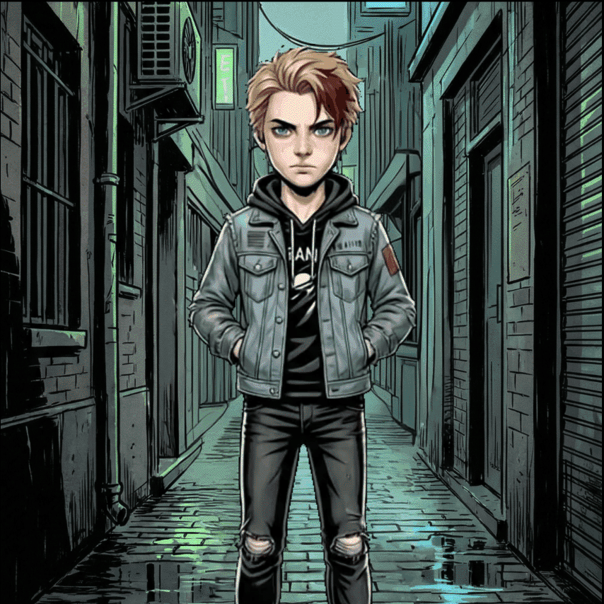
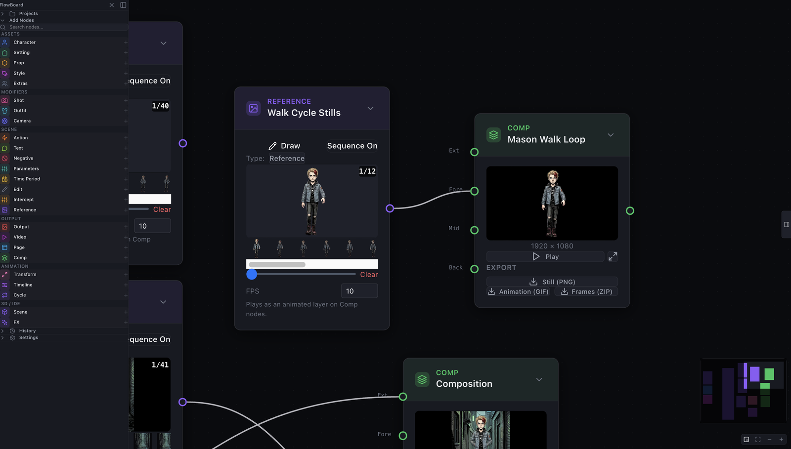
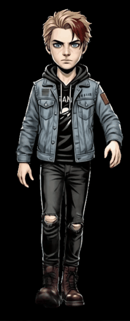

From Character Sheet to Walk Cycle
A character sheet is a promise of motion. The Cycle node keeps it: turn a pinned pose into keyed frames, composite them over a background, then hand-pick the twelve that make a true loop.

A character sheet is a promise of motion. You draw the front, the side, the three-quarter, the expressions, and every angle says the same thing: this person could walk out of the page. But a sheet does not walk. It sits there, fully specified and completely still, waiting for someone to do the part it cannot do itself.
That gap is what I have been building toward these past few days. I have a sheet for Mason, the boy from the Black Cat series, and I wanted him to take a step without redrawing him twelve times. Not a video of him. A cycle: a short span of motion that begins where it ends, so it can run forever from a handful of frames. The node that does it is young, but it works in my hands now, and this is the shape it has taken.
Start with one pose
The whole cycle hangs on a single frame: the start pose. Get that wrong and every frame after it inherits the mistake, so this is the frame I want to be cheapest to get right.
The Cycle node gives the start pose its own loop. You describe the pose, generate it, and open it full-screen in an inspector to actually look at it, not squint at a thumbnail on the canvas. If it is wrong, regenerate it in place. You stay in that loop, at image prices, until the pose is one you would be happy to build forty frames on top of. Only an approved pose rides forward. Nothing expensive happens until you have decided the cheap thing is good.

Two ways to get frames
The node runs in two modes, and both end up in the same place.
Video mode takes the pinned start pose and drives Veo from it, asking for a described motion and getting back a short clip that the node breaks into frames. Sheet mode does something more old-fashioned: it generates one sprite sheet, a grid of poses laid out with green gutters between them, and slices along those gutters into individual frames. One mode is a generated performance, the other is a generated contact sheet. Either way you come out the far side with a stack of frames instead of a stack of pixels.

Frames come back ready to use
Raw generated frames are not usable on their own. A walk against a green field is a walk trapped in a green field. So the node does the cleanup before it hands anything back: the frames come keyed, despilled, and cropped. The green is gone, the green light that bounces onto the character is gone with it, and each frame is trimmed to the character instead of the canvas.
What lands downstream is a sequence of frames with real transparency, which is exactly what you need for the next part.
Comp puts the walk somewhere
Keyed frames go into a Comp node, which plays them as a layer over a background. The background can be a still, and the character walks in front of a fixed room. Or the background can itself be moving.
That last part came from teaching the Reference node's sequence mode to do more than scrub. A sequence used to be a storyboard you paged through by hand. Now a sequence plays as an animated Comp layer with its own frame rate, which means a moving background and a moving character are just two layers stacked with two edges between them. A background sequence and a walk cycle composite together the same way two stills would.

Then you export, and then you choose
You can export the result as a GIF, or as PNG frames that keep their alpha, so the walk stays a walk you can drop onto anything later.
But the export I care about most is the one that makes a real loop. A generated take is never a clean loop by itself. It has warm-up at the front, drift at the back, and somewhere in the middle one clean stride. So I use Export Frames to get the whole take as a ZIP, then I sit down and pick the frames by hand: the roughly twelve frames that cover exactly one stride, from a footfall back to the same footfall.

Those frames go into a Sequence-On Reference. And now it loops forever, not because a model was asked to make a loop, but because I picked the first frame and the last frame and they are the same footfall. The loop is true by construction. A person decided where it begins and ends.

That is the part I keep coming back to. The node generates a lot, but the animation is the twelve frames a person kept. The generation gets you material fast. The judgment about which material to keep stays with you.